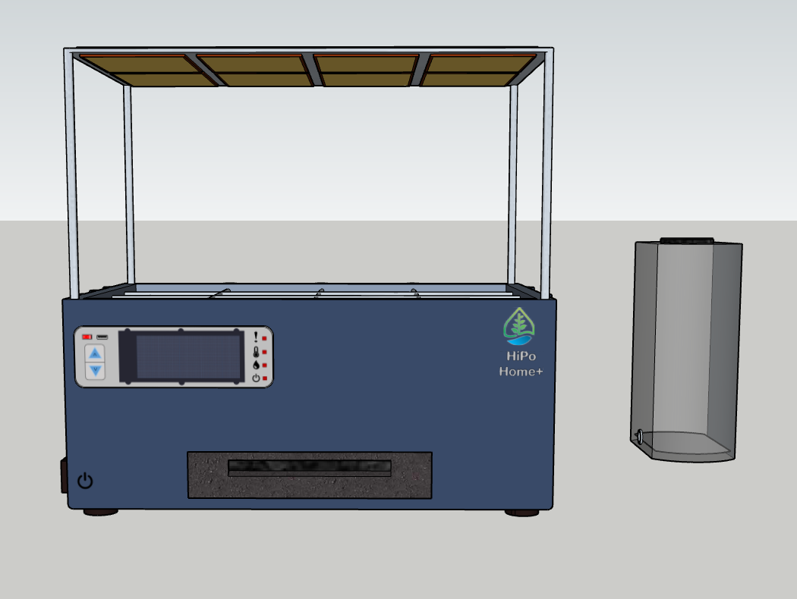
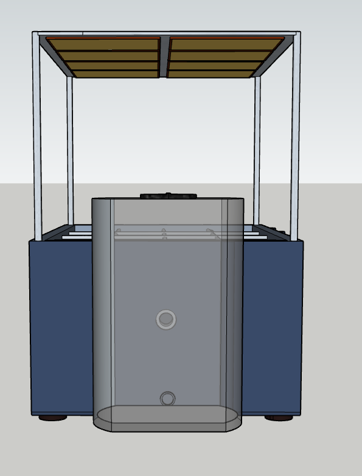
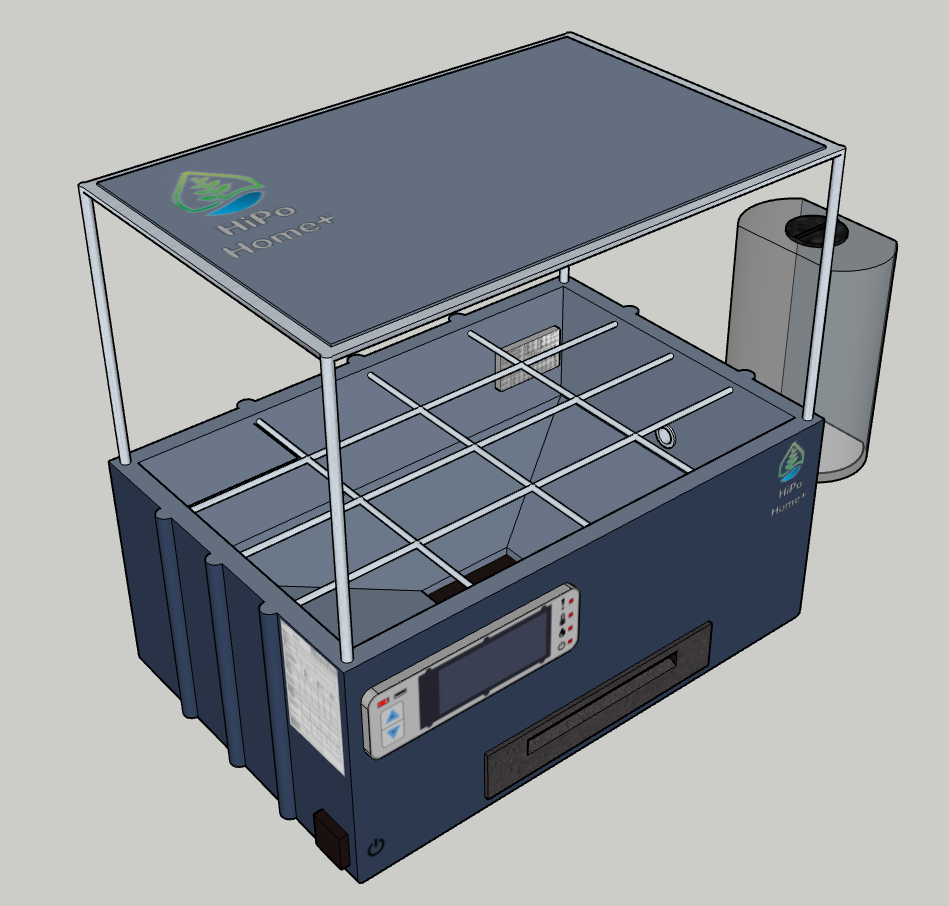
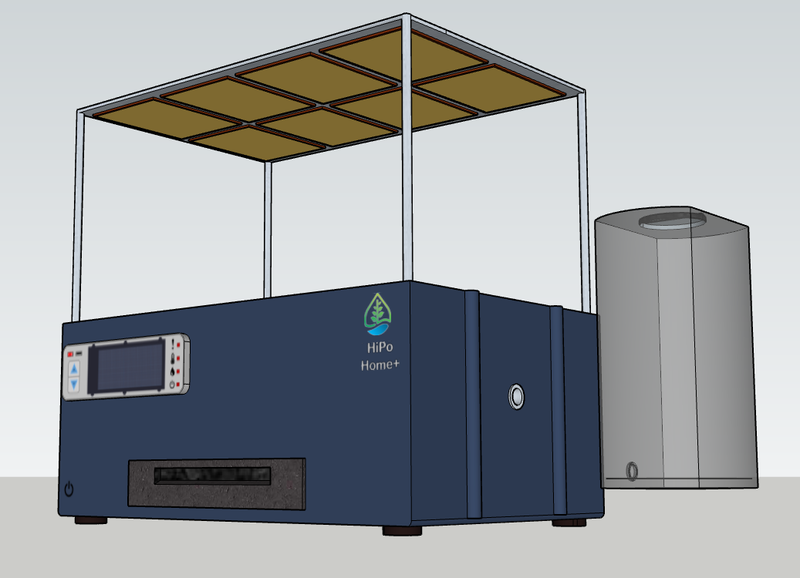

O HiPo sustavu:
HiPo je inovativni samoodrživ hidroponski sustav koji se sastoji od: posude za rast biljaka, spremnika vode, pumpe za vodu, sustava za kapanje i raspršivanje, materijala za potporu biljka, podesivog izvora svjetlosti i topline, pumpe za zrak (aeratora), senzora i logičkog sklopovlja koji sadržava umjetnu inteligenciju za automatsko održavanje optimalnih uvjeta za uzgoj biljaka. Sustav koristi hidroponsku tehnologiju za uzgoj biljaka bez tla, koristeći vodu obogaćenu hranjivim tvarima.Način na koji proizvod funkcionira:
Pomoću integriranih senzora za praćenje razine vode, pH vrijednosti, temperature i svjetlosnih uvjeta, HiPo automatski prilagođava parametre kako bi osigurao optimalne uvjete za rast biljaka. Uz pomoć umjetne inteligencije, sustav uči iz prethodnih podataka i prilagođava se specifičnim potrebama svake biljke kako bi maksimizirao njezin rast i razvoj.Ciljana skupina:
Ciljana skupina za HiPo sustav su ljudi koji su zainteresirani za unutarnji uzgoj biljaka, bez obzira na to jesu li u ruralnim ili urbanim područjima. Ova skupina obuhvaća ljude u dobi od 25 do 55 godina, srednjeg do visokog prihoda, koji cijene praktičnost i ekološki prihvatljive metode uzgoja hrane.Upute za korištenje



